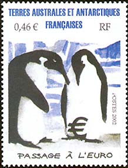
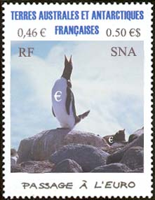
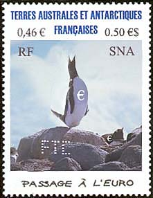
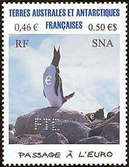

|
Created:
11/12/02. Revised:
01/07/06. |
|
|
|
On 17th of February 2002 the French Southern and Antarctic Territories have issued the stamp shown below.

"Passage · l'Euro" means of course "the transition to Euro", a topic that seems to present a high interests to both penguins. One of them displays an Euro "tattoo" on its belly, as shown above, an idea that exceeds even the imagination of our SNA designers.

Thanks to the inputs got on the RCSD newsgroup (see below), the SNAPO issued on 13th October 2002, together with the French Southern and Antarctic Territories, a stamp dedicated to the new born species, the French Antarctic Euro Penguin. This joint issue shows the proud penguin mother announcing to the world the birth of the first Euro-penguin baby (shown on the left side of its mother, among the rocks).
From the newsgroup
rec.collecting.stamps.discuss
(12th to 13th October 2002)
Wouldn't this be "lower" intelligence? Arctic
pengiuns would have "higher" intelligence. :)
Ask Lin "Pengi" about this - she may know.
Tracy (Barber)
I think the lower euro symbol is supposed to be either an egg or baby penguin, not a tatoo. Penguins carry both on their feet to shelter from direct ice contact. TJR (Terry Reedy
The Euro Sign isn't tattooed on the belly of the penguins. It's representing an egg which the male penguin protects. Glenn (Estus)
All postings are copyrighted by their respective authors.
FIRST SNA PERFINS
Great news for all perfins collectors! The biggest SNA company, the Fennec Tea Corporation (FTC), that employs at time over 100,000 workers, has got the approval of the SNAPO for its first perfins. The FTC Ltd. is located in Ciudad de Leon, the capital of the SNA.
|
 |
 |
The FTC management has chosen the Passage to Euro joint issue of SNA and FSAT because many of its workers originated in those distant territories. Their cooperation, especially with the post-fennecs is exemplary.
Taking in consideration some critiques that came from some SNA nature-friendly groups, the SNAPO corrected the design of the stamp (on the left). Both versions have equal validity and the issued quantities were roughly the same, of about 1 million pieces each. The new version got the number 5376a in the Catalogue of SNA Stamp.
|
Created:
11/12/02. Revised:
01/07/06. |
|